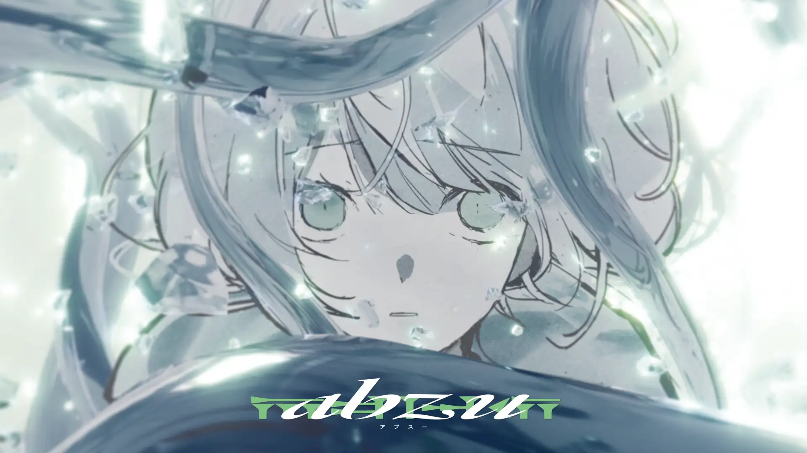

exonorm
宇宙的危機に瀕した文明の神話から現代の問題を描く1stアルバム。レフトフィールドベース、ドラムンベース、ボカロプロダクションを融合させ、深遠なサウンドスケープを展開する。
Producer · DJ · Artist — crafting intricate electronic worlds with VOCALOIDs and beyond.
音楽を聴く
elli mia(エリエムアイエー)は、茨城県つくば市を拠点とする電子音楽プロデューサー・DJ・アーティスト。レフトフィールドベース、ドラムンベース、実験的エレクトロニカをルーツに、身体性と実験性、形式と経験の境界を縫う表現を試みる。
2023年リリースのEP『animacy』では、VOCALOIDプロダクションと精緻なリズムテクスチャーを融合させ、インターネットシーンが抱える歴史的な問題を提起。1stアルバム『exonorm』(2026年)は、連星系の重力に捕らわれた文明の宇宙的危機を描き、緻密なサウンドデザインと詩的な歌詞が交錯する。
DJ・イベントオーガナイザーとしても活動。自身のイベント『purewire』を共催したほか、OctBass・CIRCUS TOKYO・Wall&Wall・Barフェーダーなど日本各地のクラブで出演。ボーカルミックス・アレンジ・楽曲制作のクライアントワークも行う。
宇宙的危機に瀕した文明の神話から現代の問題を描く1stアルバム。レフトフィールドベース、ドラムンベース、ボカロプロダクションを融合させ、深遠なサウンドスケープを展開する。

初音ミクをフィーチャーした6曲入りEP。VOCALOIDを核にした電子音楽への独自アプローチを打ち出した初期の代表作。

utumiyqcomとのコラボレーション作品。elli miaがプロダクション・アレンジを担当。

viviα、Sugar88、katawareとの、オンラインイベント『ボカデュオ』での合作。社会が抱える問題とそれをうけた個人の在り方を、叙事詩的モチーフとともに描く。elli miaがプロダクション・アレンジを担当。
2022年12月にDJとしてのキャリアをスタート。日本のネット・アンダーグラウンドシーンへの本格的な参入を果たした。
『animacy』EP(2023年1月)をリリース。OctBass・CIRCUS TOKYO・Wall&Wallを含む日本各地で10数本のクラブナイトに出演。自身のイベント『purewire』を共同設立。
utumiyqcom『another』にプロダクション・アレンジとして参加。ソロ活動を超えたコラボレーターとしての側面を広げた。
Lost Frog Productionsより デビューフルアルバム『exonorm』(2026年2月)をリリース。国際的な電子音楽コミュニティでも注目を集めている。